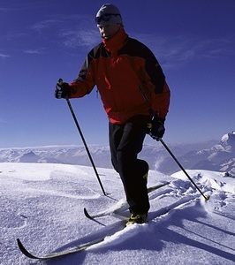
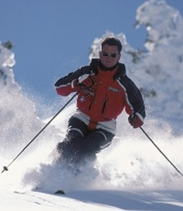
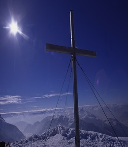
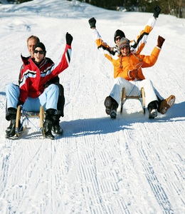
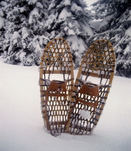
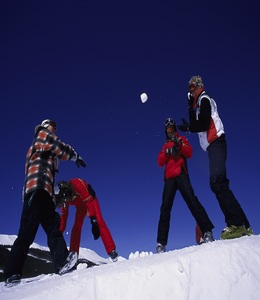

Ein sportliches und kurzweiliges Vergnügen: Langlauf im Ridwang.
250 Kilometer täglich frisch präparierte Langlaufloipen werden allen Ansprüchen gerecht, den klassischen Cruisern und den Skatern, den Anfängern und den konditionsstarken, geübten Läufern. Über Höhenloipen, durch stille Täler und Wälder führen unsere Strecken – hier kann man „Langlauf“ wörtlich nehmen.

Pulverschnee in Hülle und Fülle ist der Traum eines jeden Skifahrers und Snowboarders.
Im Ridwang ist er Realität. Über 200 Kilometer Abfahrtspisten und insgesamt 38 Lifte stehen den Ski- und Snowboardfahrern zur Auswahl. Und auch Carver sind in unserem Skigebiet gern gesehene Gäste.
Das Ridwang mit der Jodlerspitz auf 2254 Höhenmeter ist schneesicher und bietet hervorragende Pistenverhältnisse und einen Skizirkus mit einer einzigartigen Kulisse. Hier können Sie an jedem Urlaubstag neue Abfahrten entdecken.

Das Ridwang verfügt über ein einzigartig großes Netz an Winterwanderwegen.Erleben Sie die wunderschönen Seitentäler des Gebirges zu Fuß. Oder begeben Sie sich auf Gipfeltour mit großartigen Aussichten und Fernblicken auf den Höhenwegen.
Besonders empfehlenswert sind die Touren ins Breitenbachtal, zum Obereck und der Rundwanderweg auf dem Gletscherpass auf 2200 Meter Höhe. Alle Höhenwanderwege erreichen Sie zu Fuß oder bequem mit Bergbahnen und Sesselliften.

Für Kinder und Erwachsene bietet das Wintersportgebiet sieben Rodelstrecken mit unterschiedlichen Längen und Schwierigkeitsgraden.
Schlittenfahren ist ein Spaß für die ganze Familie. Eine besondere Gaudi sind die Strecken abends bei Flutlicht.

Wandern in einem Traum aus weiß und blau, Schritt für Schritt unberührter Schnee, ein atemberaubendes Panorama, frische Bergluft und Sonnenschein: Schneeschuhwandern verspricht Schneespaß pur.
Wie schon vor Hunderten von Jahren, schützen die breiten Teller vor dem Einsinken in den Tiefschnee. So können Sie sich in einer bezaubernden Bergwelt aus Eis und Schnee fortbewegen, fernab der Zivilisation den Alltag hinter sich lassen – das Gefühl von Einsamkeit, Ruhe und Freiheit neu entdecken.
Unser besonderer Tipp: Steigen Sie mit Schneeschuhen hinauf auf die Berge und rodeln Sie in rasanter Fahrt wieder hinab ins Tal. Vorher locken urige Almhütten zur Einkehr.

Wilderness-Touren durch den Tiefschnee und unberührte Natur, Eisklettern über gefrorene Wasserfälle oder Snowtubing – da geht es auf einem großen Reifen und mit viel Spaß den Berg hinab – das Ridwang verbindet in einzigartiger Weise Fun und Abenteuer.
Skifahren abseits der überfüllten Pisten: Das Skitourengehen zählt mit Sicherheit zu den schönsten Sportarten im Gebirge. Zur herrlichen Aussicht kommt hier das Erlebnis der Abfahrt, die bei unseren guten Schneeverhältnissen zu einem absoluten Traum wird.